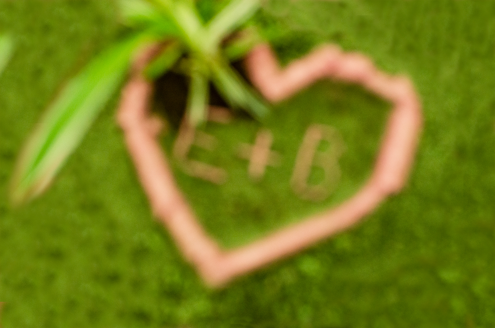
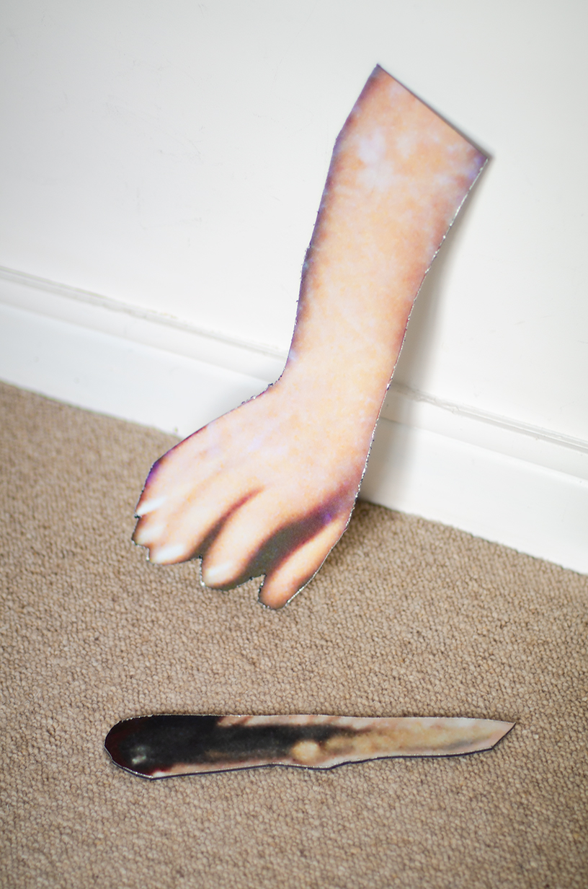

(fig.1)

Prehistoric love I, impression 3D, flocage, paillettes, 2022, 35x15x15 cm
(fig.2)
Prehistoric love II, image générée grâce à l'IA Gaugan 2, 2022, 15x15 cm
(fig.3)

Prehistoric love III, impression numérique sur dibond, 2022, 25x40 cm
(fig.4)

Prehistoric love IV, papier aluminium, 2021, 25x20 cm
Prehistoric love I, impression 3D, flocage, paillettes, 2022, 35x15x15 cm
Prehistoric love II, image générée grâce à l'IA Gaugan 2, 2022, 15x15 cm
Prehistoric love II, impression numérique sur dibond, 2022, 25x40 cm
Prehistoric love III, impression numérique lambda, 2021, 25x20 cm
Recherche (en cours) plastique et théorique sur l’imagerie de l’amour et de la violence à travers des images stéréotypées d’expression de ces sentiments comme un cœur gravé dans un arbre (fig.1,2), une main et un couteau (fig.3)… Confrontées à des souvenirs d’image d’amour et de violence intimes et singuliers, personnels (fig.4)…